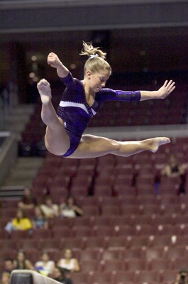

Shawn Johnson (USA)
2007 World AA Champion
2008 Olympic AA Silver Medalist
2008 Olympic
B Gold Medalist

Medal Total
Olympic Games: 1 Gold, 3
Silver
World Championships: 3 Gold
Shawn was born on January 19, 1992, in West Des Moines, Iowa. Visit her website for more information.
Competition
Results
2004
J.O. Championships: 4th AA, 1st B, 2nd FX, 4th V
2005
Jr. US Classic: 3rd AA
Jr. USA Championships: 10th AA, 4th V, 9th UB
Top Gym International: 1st AA, 1st V, 1st FX
2006
Gymnix International: 3rd AA, 1st FX, 2nd V, 5th UB
Jr. Pacific Alliance Championships: 1st Team, 1st AA, 1st V, 1st FX, 2nd B
Jr. Pan American Championships: 1st Team, 1st AA, 2nd UB, 2nd FX
Jr. US Classic: 1st AA
Jr. USA Championships: 1st AA, 1st V, 1st B, 1st FX, 2nd UB
USA-JPN-NZL Tri-Meet: 1st AA, 1st V, 1st B, 2nd FX, 3rd UB
2007
American Cup: 1st AA
Pan American Games: 1st Team, 1st AA, 1st UB, 1st B, 2nd FX
USA Championships: 1st AA, 1st B, 1st FX, 3rd UB
USA-GBR Dual Meet: 1st Team, 1st AA, 1st B, 2nd V
World Championships: 1st Team, 1st AA, 1st FX, 8th B
2008
American Cup: 2nd AA
Olympic Games: 2nd Team, 2nd AA, 1st B, 2nd FX
US Olympic Trials: 1st AA
USA Championships: 1st AA, 1st FX, 2nd B, 5th UB
2011
Pan American Games: 1st Team, 2nd UB
US Classic: 11th UB, 16th B
USA Championships: 4th B, 6th UB
This page was created on June 13, 2010.
© Gymn Forum